Salon OM is two practices under one roof: the salon, and Inner Work with Maggie. The question is how a visitor on the salon page finds out the second one exists. Here is how six brands handle the same problem, and the three options built from them, all live on the dev site.
Two worlds in one switch at the top centre, the way Monzo shows Personal and Business, and Airbnb shows Homes and Experiences. Always visible, never in the way.
Risk: it can read as part of the nav, not as an invitation.
Open a →A small fixed bar at the bottom: Also here · Inner Work with Maggie · Enter. It speaks like Apple Education's sub-bar: a named place you can step into.
Risk: one more thing on screen; it hides when the menu opens.
Open b →The pill, with a label underneath and an arrow that breathes, so the second world reads as an equal offer, as in Headspace's two side-by-side cards.
Risk: the label is quiet; on phones it sits low in the hero.
Open c →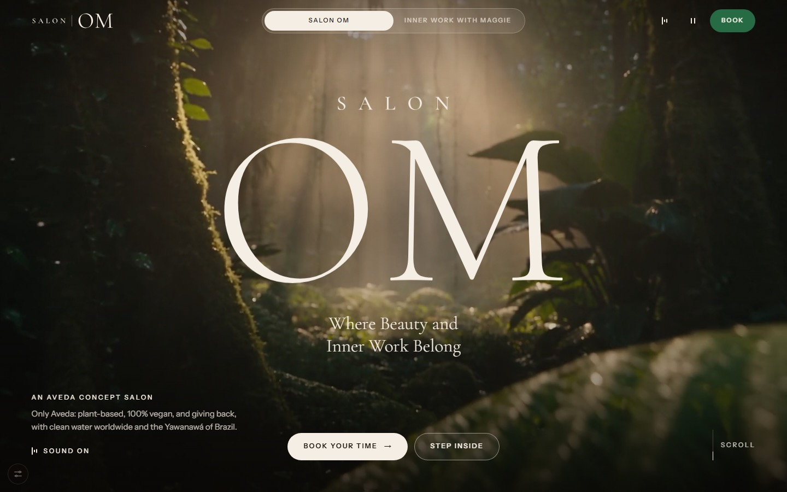
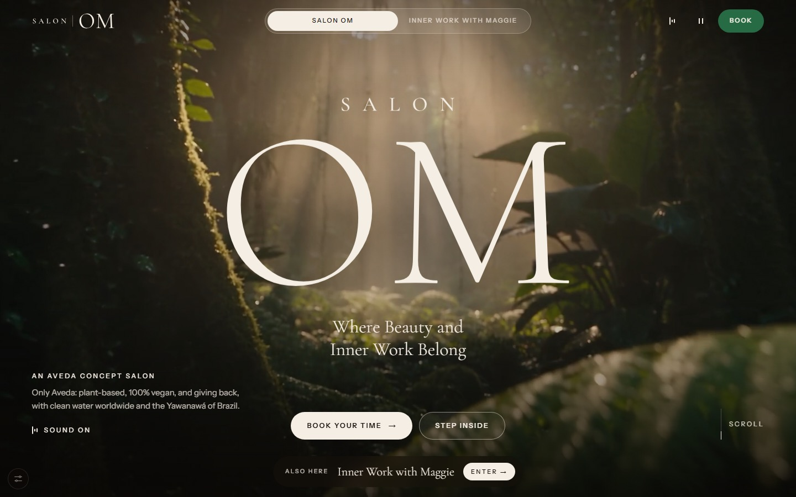
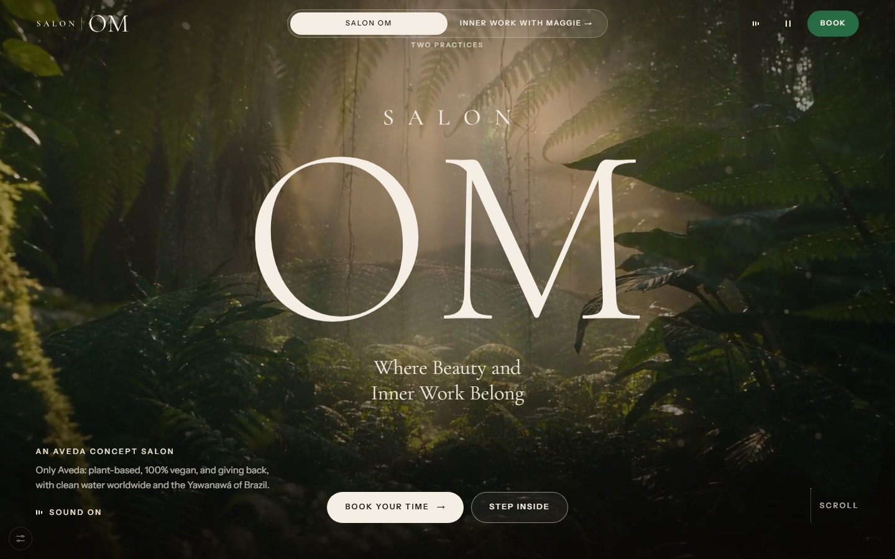
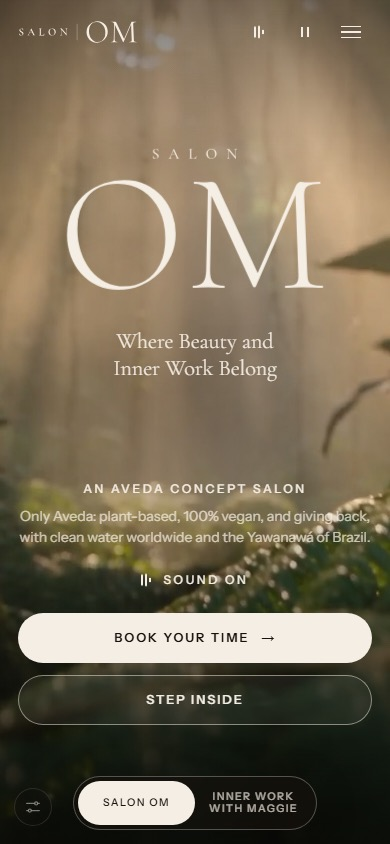
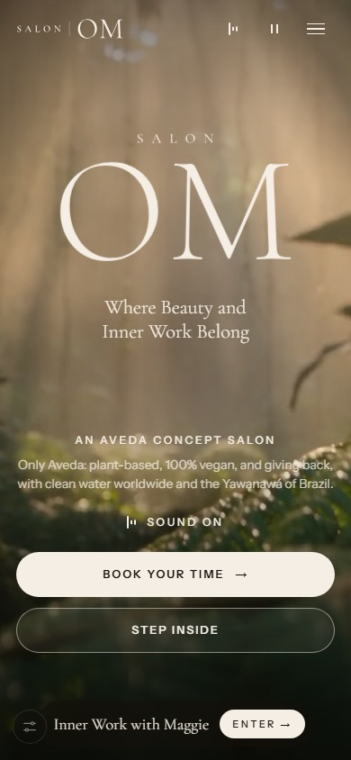
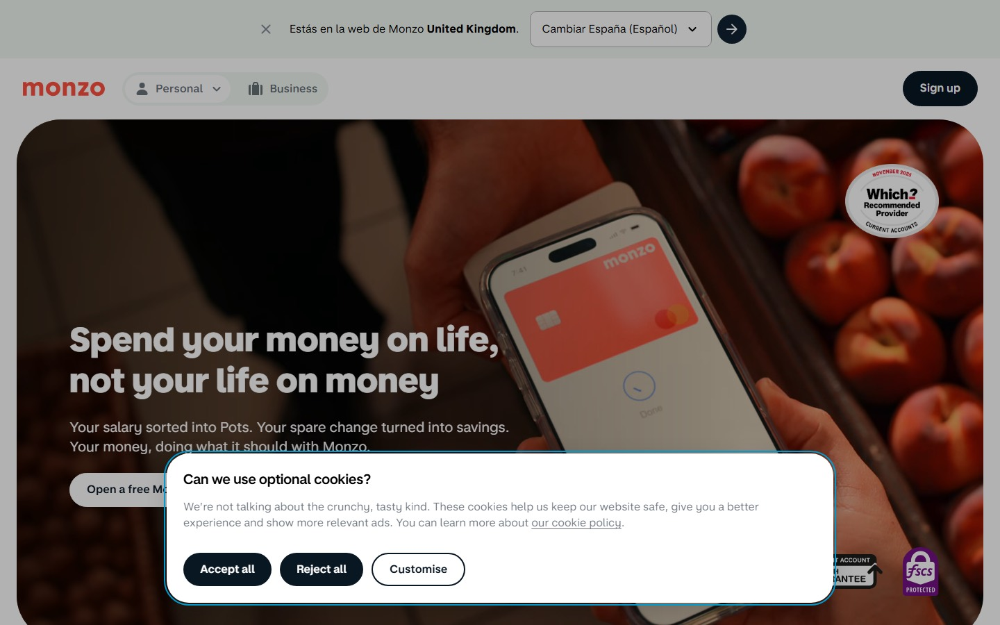
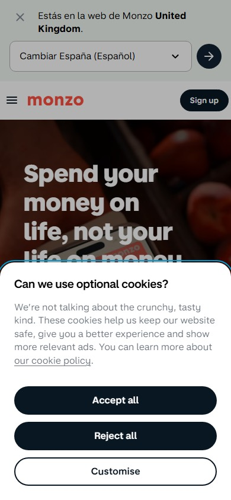
Two audiences, one brand. A segmented pill sits right beside the logo, and each side has its own icon. You are always in one of the two worlds, and the other is one tap away.
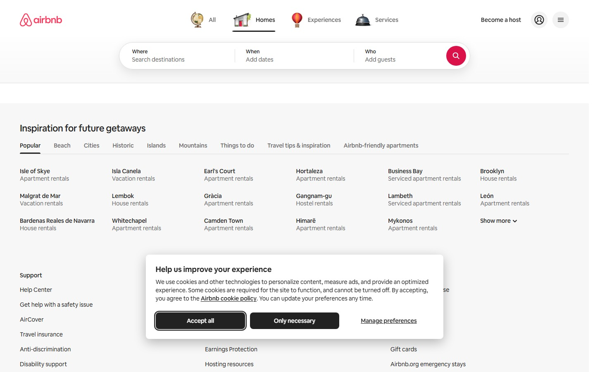
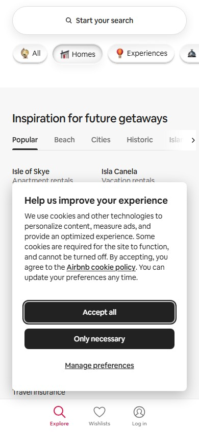
The worlds are top-centre tabs, each with a small illustrated icon and an underline on the one you are in. On phones they become chips you can scroll. Switching changes the whole page below.
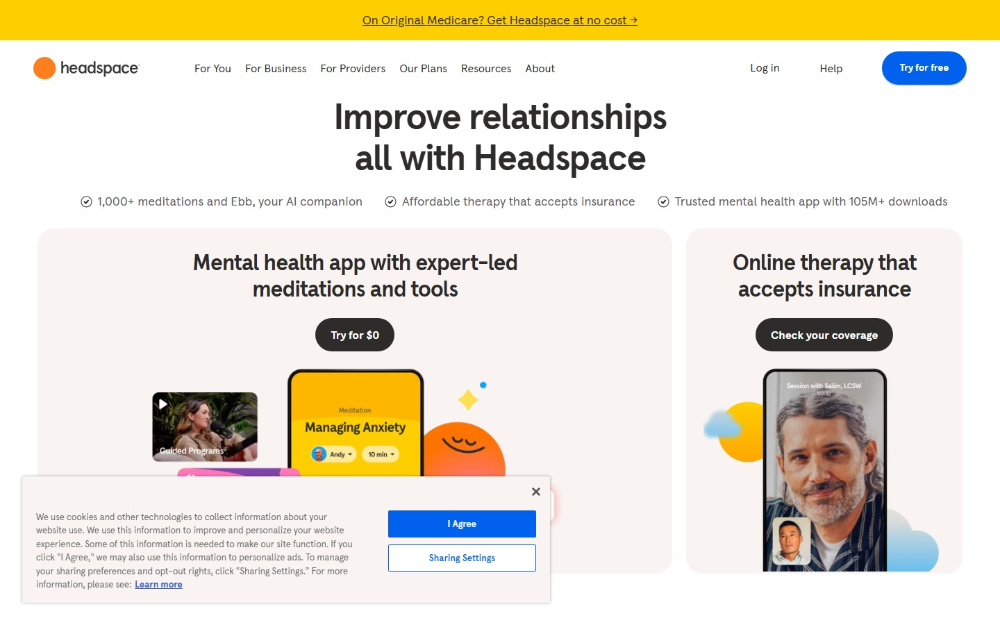
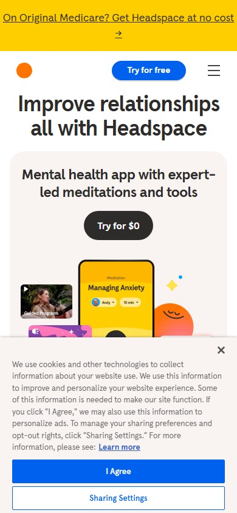
The app and the therapy practice get two equal cards right under the headline, each with its own button. On phones the second card comes after the first, so it is seen by scrolling, not by a switch.
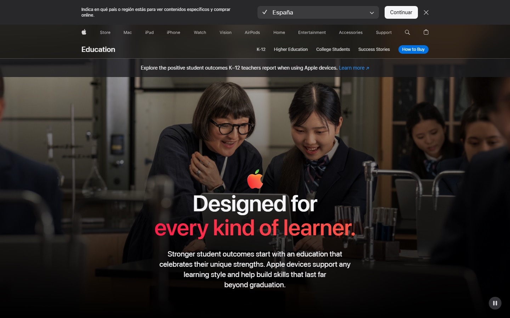
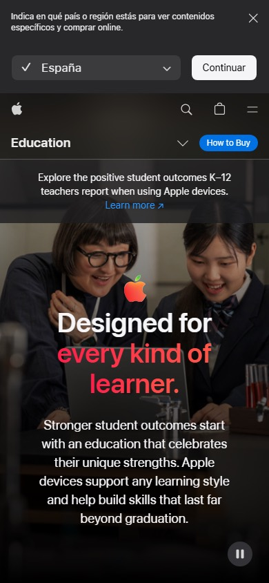
Under the global nav there is a second bar that names the world you are in ("Education") and lists its own rooms, with one button for the next step. The world has a name and its own small home.
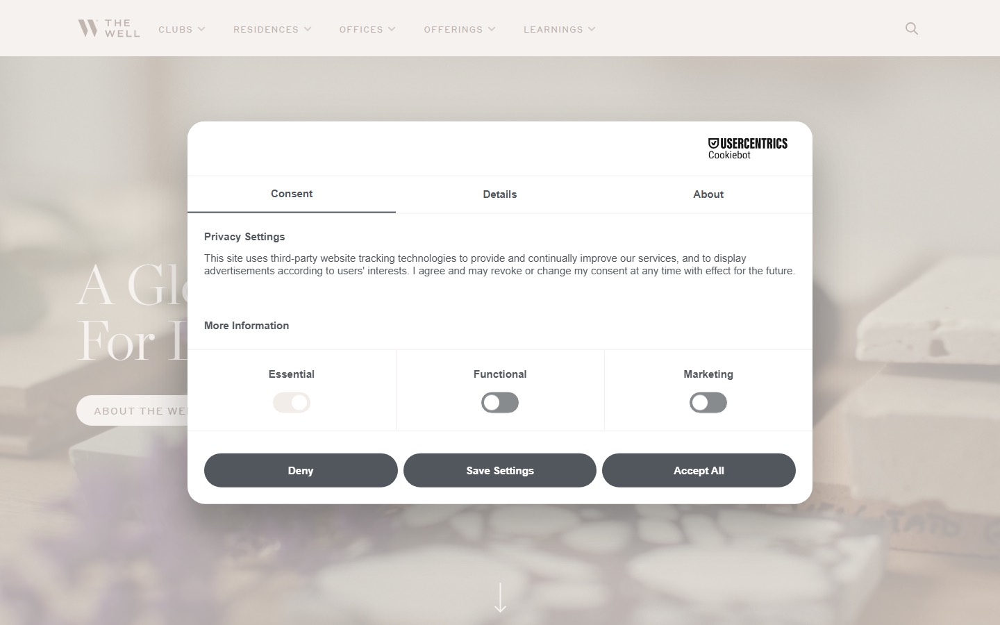
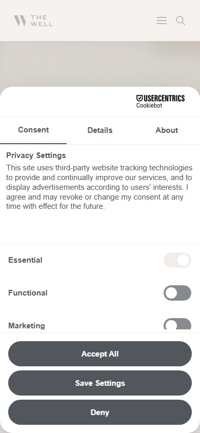
The closest in mood to OM: a soft serif, small spaced capitals, a pale photo, and many offerings (Clubs, Residences, Offerings, Learnings) kept in a calm row of tabs. Nothing shouts.
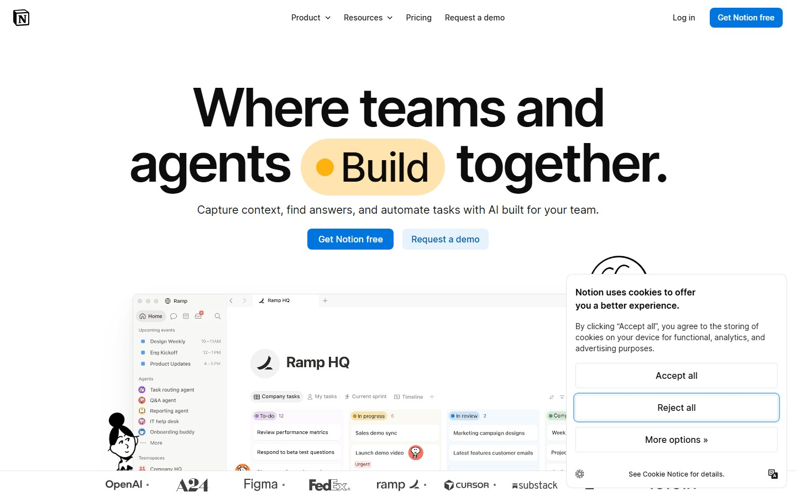
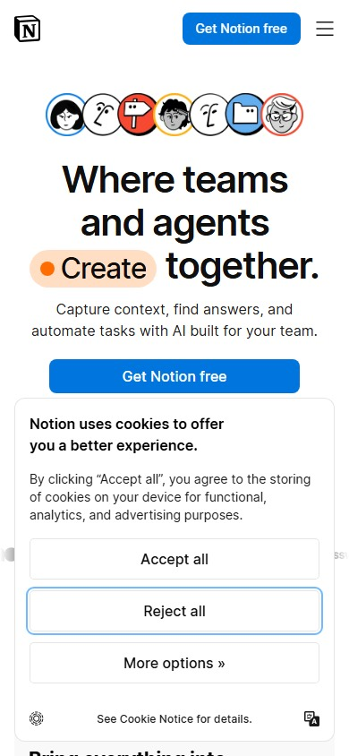
Notion has no world switch. It shows how a single highlighted word inside the headline (a soft pill with a dot) can draw the eye without adding a new element.
Revolut and Six Senses blocked the headless browser. Calm rendered blank. Several captures show cookie banners that could not be dismissed. The nav patterns are still readable.